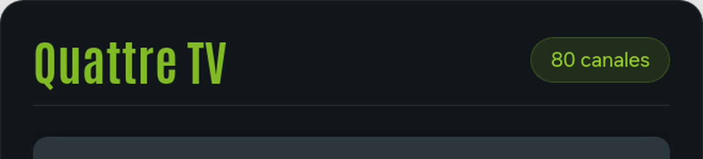
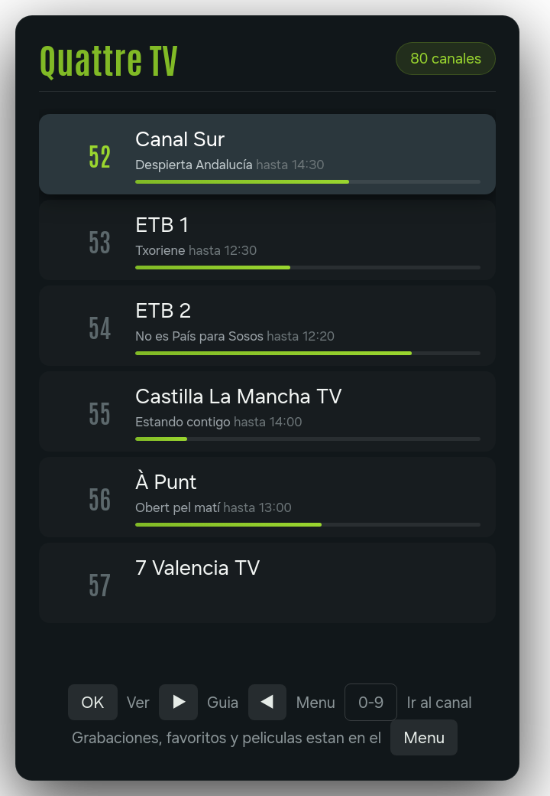

Quattre TV — LG, Samsung, descodificadores y, mas adelante, Android TV · 7 de septiembre de 2026
Hoy los dos rotulos de la aplicacion son texto, compuesto con la tipografia Antonio en verde. Queremos sustituirlos por el logotipo real. Estas son las medidas exactas, tomadas sobre un televisor de 1920×1080.
Se piden tres cosas: el logotipo vectorial, los dos rotulos que van dentro de la aplicacion (apartados 1 y 2) y los iconos de las tiendas (apartado 3).
Es lo primero que se ve al abrir la aplicacion, con el logotipo centrado sobre fondo oscuro y el formulario de usuario y contraseña debajo.
| Espacio disponible | 450 × 120 px |
| Ocupa hoy el texto | 425 × 117 px |
| Fichero a entregar | 900 × 240 px |
| Formato | PNG con transparencia |
Se entrega al doble para que no se vea pastoso: la aplicacion lo muestra a la mitad.
Es el rotulo de arriba del listado de canales, el que se ve mientras se cambia de canal. Convive con una etiqueta verde a su derecha que indica cuantos canales hay.

Cabecera real, ampliada. El logotipo va a la izquierda; la etiqueta verde de la derecha no se toca.
| Concepto | Medida |
|---|---|
| Ocupa hoy el texto | 182 × 46 px |
| Espacio disponible hasta la etiqueta verde | 440 × 60 px |
| Alto util de la cabecera | 60 px maximo |
| Fichero a entregar | 880 × 160 px |
| Formato | PNG con transparencia |

Pantalla real de un televisor. Arriba a la izquierda, la cabecera. La etiqueta verde «80 canales» queda a su derecha y se mantiene como esta.
| Elemento | Valor |
|---|---|
| Verde del logotipo | #81BA26 |
| Verde claro (etiquetas y barras) | #9AD62F |
| Fondo del panel | #11171A |
| Fondo de la pantalla de acceso | #0C1113 |
| Tipografia | Antonio, negrita |
Cada plataforma pide sus propias piezas. Todas son el mismo logotipo, solo cambia el tamaño y el encuadre, asi que con el vectorial salen todas.
| Pieza | Medida | Donde se usa | Estado |
|---|---|---|---|
| Icono pequeño | 80 × 80 | LG — fila de aplicaciones del televisor | en uso |
| Icono grande | 130 × 130 | LG — aplicacion destacada | en uso |
| Icono de tienda | 400 × 400 | LG Content Store | en uso |
| Pantalla de arranque | 1920 × 1080 | LG y Samsung, mientras carga | en uso |
| Icono de tienda | 512 × 512 | Samsung Seller Office | por enviar |
| Banner de television | 320 × 180 | Android TV — tira de aplicaciones | previsto |
| Icono de tienda | 512 × 512 | Google Play | previsto |
| Grafico de portada | 1024 × 500 | Google Play, ficha de la aplicacion | previsto |
Una parte del parque es de 1280×720. Ahi la aplicacion reduce todo proporcionalmente —la cabecera pasa de 46 a 31 px de alto— y usa los mismos ficheros, reescalados. No hay que entregar nada aparte por esto.
| Empresa | Quattre Internet S.L. · CIF B98168206 |
| Direccion | C/ Alguixos 5, 46138 Rafelbunyol (Valencia) |
| Telefono | 961 126 346 |
| Correo | info@quattre.com |